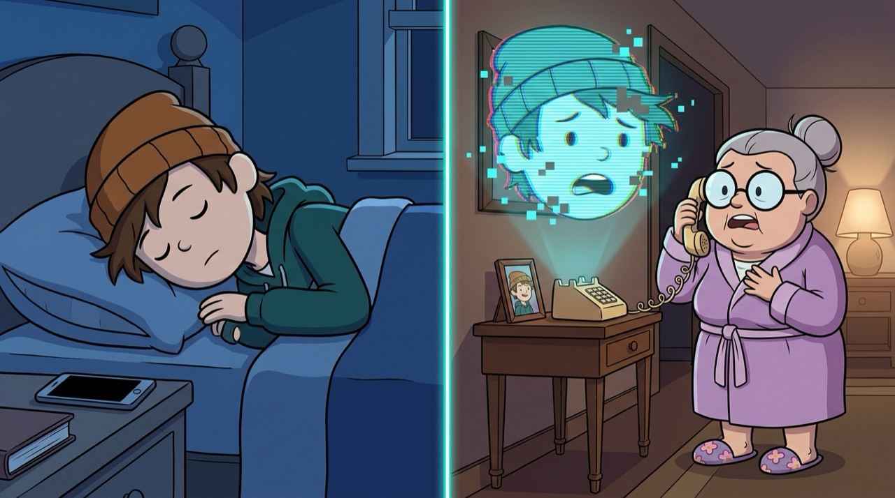

В 2025 году мошенники украли у клиентов российских банков 29,3 млрд рублей — это данные ЦБ России. В большинстве случаев люди перевели деньги сами: им позвонили, представились кем-то важным и были очень убедительны.
Вы такие звонки распознаёте за несколько секунд, но схемы «развода» пишут не для вас. Больше всего им верят люди, которые берут трубку с городского, доверяют официальным голосам и стесняются перезвонить и переспросить. У них есть какие-то накопления, свободное время днём и привычка не жаловаться. Это — про наших бабушек.
Мошенники внимательно изучают своих жертв — в этом им помогают утечки данных. За 2025 год в открытый доступ попало 767 млн записей о россиянах — на две трети больше, чем в 2024 году. По оценке Сбера, в открытом доступе есть персональные данные примерно 90% взрослых россиян. Мошенник звонит, обращается к бабушке по имени-отчеству и точно называет её банк. Это мгновенно покупает её доверие: она выросла в мире, где с таким уровнем серьёзности звонят только из официальных мест.
Этот тест — проверка ваших знаний о бабулином телефоне, её деньгах и привычках. После него расскажем, как обезопасить именно вашу бабушку и какие вопросы ей стоит задать. Тест займёт три минуты. Разговор после него — ещё минут двадцать, и, возможно, это будут самые полезные двадцать минут недели.